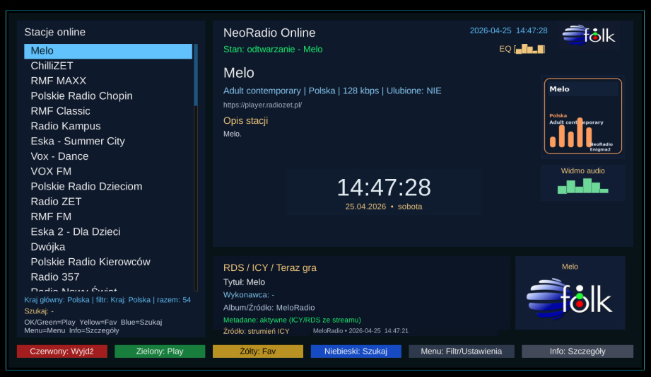

Witam na mojej stronie Paweł Pawełek
Radio internetowe
NeoRadio v2.0
Nowa wersja NeoRadio dla Enigma2: zaktualizowana baza stacji, 5759 poprawnych unikalnych stacji, porządki w danych oraz poprawiony mechanizm aktualizacji i instalacji.

Do czego służy
NeoRadio to prosta i wygodna wtyczka do słuchania radia internetowego bezpośrednio na tunerach Enigma2.
Plik: enigma2-plugin-extensions-neoradio_2.0_all.ipk 9.6 MB
Instalacja: dostępna również z poziomu AIO Panel.
Najważniejsze zmiany w v2.0
- zaktualizowano bazę stacji radiowych
- dodano 565 nowych unikalnych stacji
- usunięto 75 technicznych wpisów placeholder z pliku bukietu typu
127.0.0.1/hdfradio - usunięto 70 starych, nieprawidłowych lokalnych/testowych URL-i z bazy
- plik
stations.jsonzawiera finalnie 5759 poprawnych unikalnych stacji - dodano
postinst, który po instalacji czyści pliki instalacyjne NeoRadio z katalogu/tmp - poprawiono wewnętrzną aktualizację GitHub, aby czyściła
/tmpprzed i po instalacji paczki IPK - poprawiono angielski napis Favorites
- usunięto błędne ścieżki piconów typu
/usr/share/engma2oraz/user/share/... - podniesiono wersję wtyczki do v2.0
Zdjęcia / podgląd

Instalacja przez terminal
NeoRadio — instalacja z GitHub Release
wget -O /tmp/neoradio.ipk https://github.com/OliOli2013/NeoRadio/releases/latest/download/enigma2-plugin-extensions-neoradio_all.ipk && opkg install /tmp/neoradio.ipk && killall -9 enigma2Możesz też zainstalować NeoRadio z poziomu AIO Panel.
Instalacja pobranego IPK przez FTP
Jeśli pobierasz paczkę ręcznie: wgraj plik IPK do katalogu /tmp, a potem wykonaj instalację w terminalu.
Instalacja IPK z /tmp
opkg install /tmp/enigma2-plugin-extensions-neoradio_2.0_all.ipk